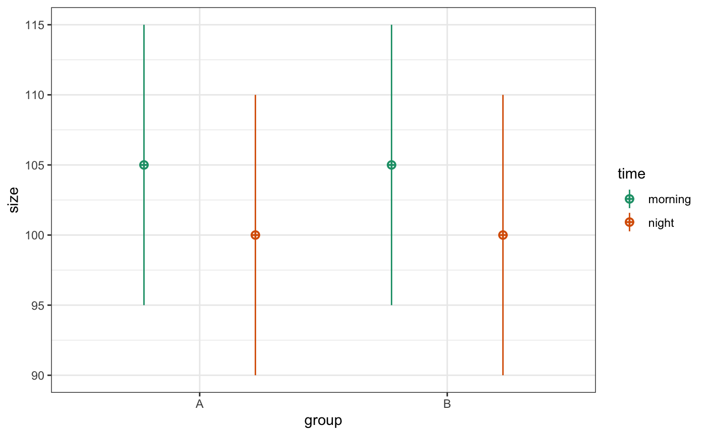

library(scienceverse) #> #> ************ #> Welcome to scienceverse For support and examples visit: #> http://scienceverse.github.io/ #> - Get and set global package options with: scienceverse_options() #> ************
Once you’ve created a scienceverse study, you can set up files from the meta-study file. Here’s a simple example testing group differences and simulating the data for the groups.
s <- study("Demo") %>% add_sim_data("dat", within = list(time = c("morning", "night")), between = list(group = c("A", "B")), mu = list(A = c(105, 100), B = c(105, 100)), n = 30, r = 0.5, sd = 10, dv = "size", long = TRUE, plot = TRUE )

#> id set to type string
#> group set to type string
#> time set to type string
#> size set to type float
s <- s %>% add_hypothesis("group", "Group A will be bigger than group B") %>% add_analysis("A1", t.test(size~group, dat)) %>% add_criterion("p", "p.value", "<", 0.05) %>% add_criterion("dir", "estimate[1]", ">", "estimate[2]") %>% add_eval("c", "significant in predicted direction", "p & dir") %>% add_eval("f", "significant in unpredicted direction", "p & !dir") %>% add_hypothesis("time", "Subjects will be bigger in the morning than at night") %>% add_analysis("A2", t.test(size~time, dat)) %>% add_criterion("p", "p.value", "<", 0.05) %>% add_criterion("dir", "estimate[1]", ">", "estimate[2]") %>% add_eval("c", "significant in predicted direction", "p & dir") %>% add_eval("f", "significant in unpredicted direction", "p & !dir") %>% study_analyse() #> Hypothesis `group`, Criterion `p`: #> p.value < 0.05 is FALSE #> p.value = 0.81 #> Hypothesis `group`, Criterion `dir`: #> estimate[1] > estimate[2] is FALSE #> estimate[1] = 101.10 #> estimate[2] = 101.5532282802 #> Hypothesis group: #> Corroborate: FALSE #> Falsify: FALSE #> Conclusion: inconclusive #> Hypothesis `time`, Criterion `p`: #> p.value < 0.05 is TRUE #> p.value = 0.02 #> Hypothesis `time`, Criterion `dir`: #> estimate[1] > estimate[2] is TRUE #> estimate[1] = 103.42 #> estimate[2] = 99.2390252648151 #> Hypothesis time: #> Corroborate: TRUE #> Falsify: FALSE #> Conclusion: corroborate
You can save the study in JSON (machine-readable) format and reload it later.
study_save(s, "study.json") #> Saving to /Users/lisad/rproj/scienceverse/scienceverse/vignettes/study.json s <- study("study.json") #> Loaded custom function: analysis_A1 #> Loaded custom function: analysis_A2
You can get all the results with the get_result() function. If you don’t specify the result name or the analysis ID, it defaults to all of the results of the first analysis. It retruns a list that you can use, but will display an RMarkdown-formatted list if you print it (and set the chunk options to results='asis').
get_result(s)
- statistic: -0.2403
- parameter: 111.5102
- p.value: 0.8106
- conf.int:
- -4.1552
- 3.2564
- estimate:
- 101.1039
- 101.5532
- null.value: 0
- stderr: 1.8702
- alternative: two.sided
- method: Welch Two Sample t-test
- data.name: size by group
Get a specific result from a specific analysis.
get_result(study = s, result = "p.value", analysis_id = "A2", digits = 3, return = "value") #> [1] 0.024
Set value to char if you want to keep trailing zeros (return the number as a character string).
get_result(study = s, result = "parameter", analysis_id = 1, digits = 3, return = "char") #> [1] "111.510"
You can display the value as a link to the analysis file (created with make_script). The digits default to the global option, so you can reset that. And you can use the shorthand function get_html if you only have one study object loaded. The analysis link defaults to “analysis.html”, but you can change this with scienceverse_options() as shown.
make_script(s, "analysis.Rmd") rmarkdown::render("analysis.Rmd") #> /Applications/RStudio.app/Contents/MacOS/pandoc/pandoc +RTS -K512m -RTS analysis.utf8.md --to html4 --from markdown+autolink_bare_uris+tex_math_single_backslash --output analysis.html --email-obfuscation none --self-contained --standalone --section-divs --table-of-contents --toc-depth 3 --variable toc_float=1 --variable toc_selectors=h1,h2,h3 --variable toc_collapsed=1 --variable toc_smooth_scroll=1 --variable toc_print=1 --template /Library/Frameworks/R.framework/Versions/4.0/Resources/library/rmarkdown/rmd/h/default.html --no-highlight --variable highlightjs=1 --variable 'theme:bootstrap' --include-in-header /var/folders/6w/y3tyzgs1403cz7tgw8k4lk600000gq/T//Rtmp7Eqcaw/rmarkdown-str59812a16aa6.html --mathjax --variable 'mathjax-url:https://mathjax.rstudio.com/latest/MathJax.js?config=TeX-AMS-MML_HTMLorMML' --lua-filter /Library/Frameworks/R.framework/Versions/4.0/Resources/library/rmarkdown/rmd/lua/pagebreak.lua --lua-filter /Library/Frameworks/R.framework/Versions/4.0/Resources/library/rmarkdown/rmd/lua/latex-div.lua options(digits = 3) scienceverse_options(analysis_link = "analysis.html") get_html("p.value") #> [1] "<a href='analysis.html#analysis_1' title='Analysis 1 Result p.value'>0.811</a>"
You’ll probably want to use get_html() inline most of the time like this:
For hypothesis 1, the subjects in group A were not any bigger than those in group B (t = -0.24, df = 111.5, p = 0.811, 95% CI = [-4.16, 3.26]).
For hypothesis 1, the subjects were larger in the morning than at night (t = 2.28, df = 116.1, p = 0.024, 95% CI = [0.55, 7.80]).